From “I’m new” to “I can do this.”
A friendly, step-by-step world where complicated digital marketing ideas become clear, practical and genuinely exciting to explore.

Not a pile of topics.
A journey that makes sense.
When you are a beginner, the hardest part is often knowing where to start. So we connect every idea to the next one, explain the “why”, and give you chances to try it for yourself.
You are not expected to know everything on day one. You just need a place where it is safe to ask, explore and improve.
Learn it. See it. Try it.
Tap each stage to see what happens during your learning journey.
Start with simple, human explanations.
New words are introduced gently, explained in everyday language and connected to familiar situations—so you understand what something means and why it matters.
10 modules. One bigger picture.
Explore the path from foundations to putting digital marketing into action.
MODULES
Digital Marketing Foundations
Understand what digital marketing is and how the pieces work together.
START HERE ↗ 02⌕Website & Online Presence
Discover websites, user experience and a business’s online home.
EXPLORE MODULE ↗ 03◉Search Engine Optimisation
Learn how useful content helps people find answers through search.
EXPLORE MODULE ↗ 04◎Content Marketing
Plan helpful content that earns attention and builds trust.
EXPLORE MODULE ↗ 05♡Social Media Marketing
Choose platforms, understand audiences and create conversations.
EXPLORE MODULE ↗ 06✉Email Marketing
Explore permission-based communication and meaningful follow-ups.
EXPLORE MODULE ↗ 07↗Paid Advertising
Meet campaign goals, audiences, budgets and ad measurement.
EXPLORE MODULE ↗ 08⌁Analytics & Measurement
Read useful signals and make decisions based on evidence.
EXPLORE MODULE ↗ 09◇Strategy & Campaign Planning
Bring channels and goals together in a thoughtful plan.
EXPLORE MODULE ↗ 10✦Practical Project & Career Skills
Apply what you have learned and explain your thinking clearly.
EXPLORE MODULE ↗✦ Module titles describe the intended learning roadmap. Lesson depth and availability may vary while the platform is being developed.
Meet Maple Lane Bakery. Your practice playground.
Imagine a neighbourhood bakery that wants more people to discover its fresh bread. Across the course, we use this fictional business to make abstract ideas feel real—from understanding customers to choosing channels and measuring results.
See the first learning mission ↗Curiosity is your superpower.
Try this tiny check-in. It is not an exam—just a chance to practise thinking like a digital marketer.
A local café wants nearby people to discover its new website. What should it think about first?
Choose an answer to reveal a helpful explanation.
More ways to move forward.
Learning is stronger when you can revisit, practise and apply what you know.
Good questions.
Honest answers.
Here are a few things beginners often wonder about.
Do I need any previous experience?
No. The journey is designed to begin with the basics. You can take your time with new terms and ideas.
What if I find a topic difficult?
Pause, revisit the explanation and use the examples to make the idea smaller. Learning at your own pace is part of the approach.
Will I become job-ready just by completing the modules?
Completing lessons can build understanding, but job readiness also takes practice, feedback and experience. No job or income outcome is guaranteed.
Can I use a phone to learn?
Yes. Pages are designed responsively for smaller screens. Keep your browser updated for the best experience.
You don't have to be an expert
to get started.
Start with one idea. Build on it. Let your confidence grow one small win at a time.
Begin Module 01 ↗